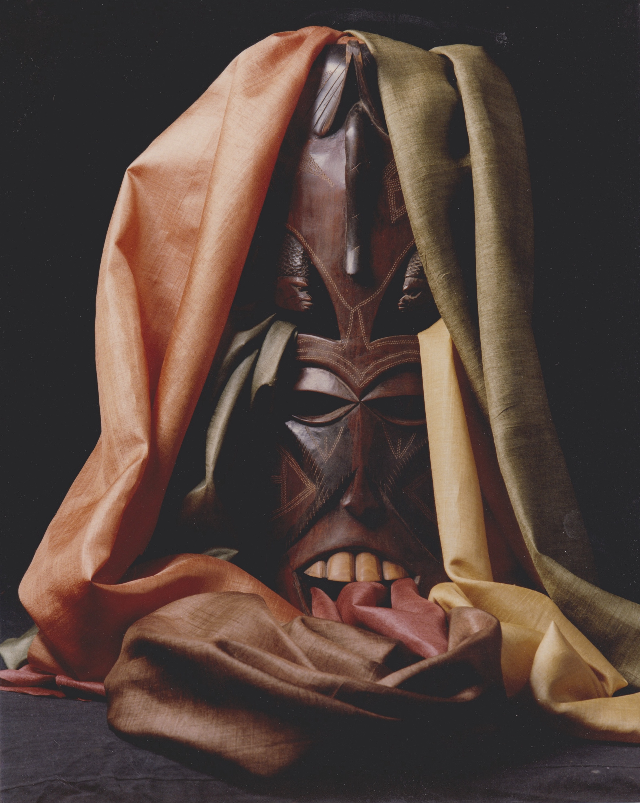
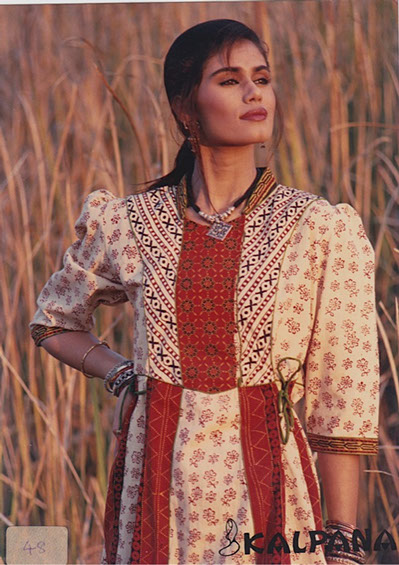

In 1985, Handlooms, Handcrafted Textiles & Clothing were only afforded by the very rich. The demand was accordingly very limited. The colors were not fast, the weaving was often loose and only dry-cleaning was needed.
With our involvement, the scenario changed quickly. These products were made with better weaving and dyeing. Proper designing was introduced and cottons were encouraged. The costs were brought down because of better controls and more production. The products became attractive and affordable to the middle class also.
They became a hit amongst the young college girls. Accordingly the market size increased considerably in India in the next decade. Menswear followed suit.
In 1993, with a focus on Eco-friendly, these products were redesigned and introduced in the International market wherein we were the pioneers. Organic Farming of cotton was successfully started. Clothes for both men and women started becoming popular in Europe during this period. They were displayed in the top exhibitions at Paris and Cologne and their photos published in the top fashion magazines of Europe.